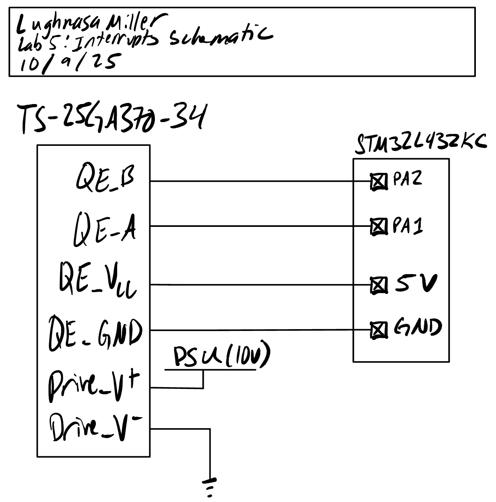
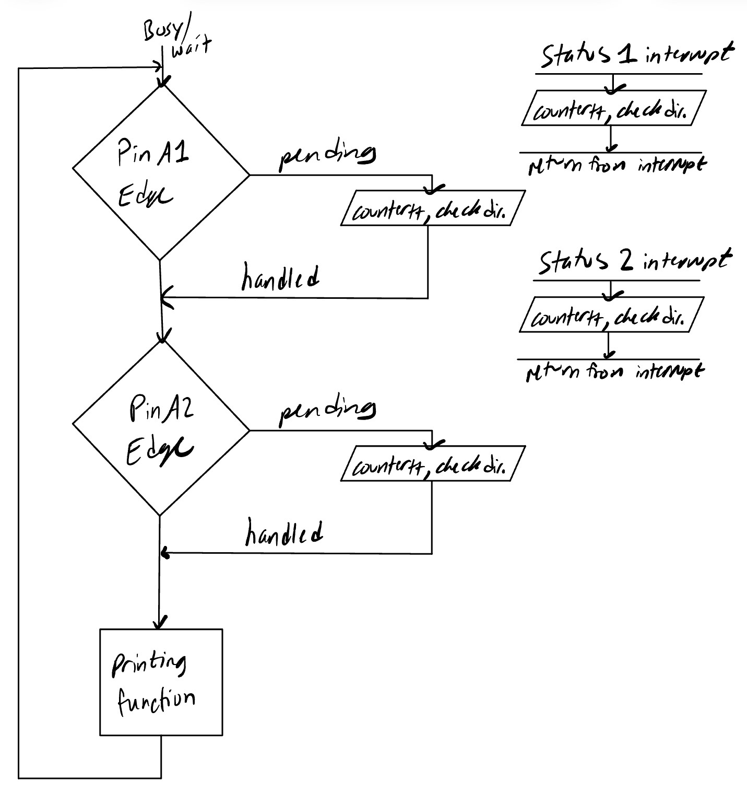
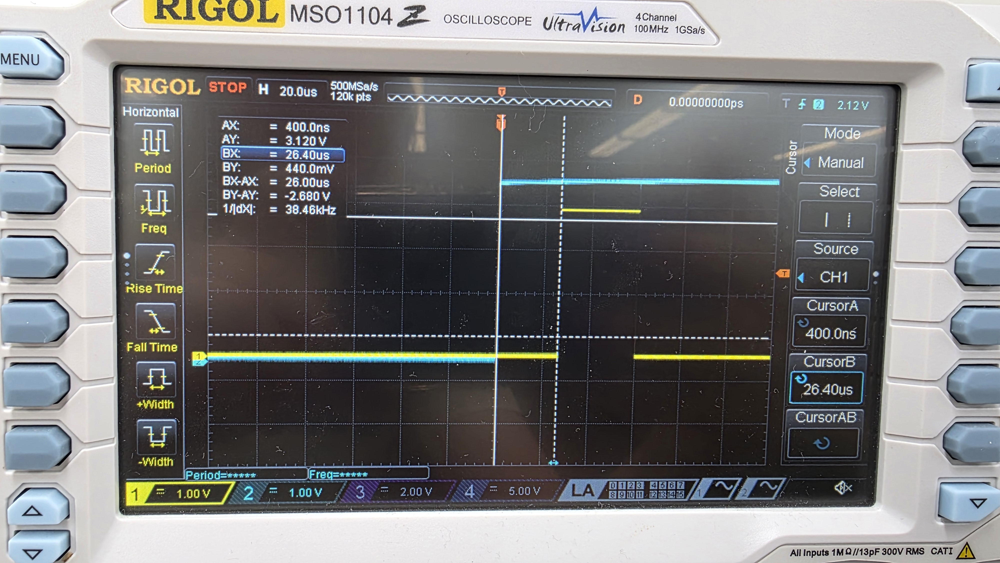
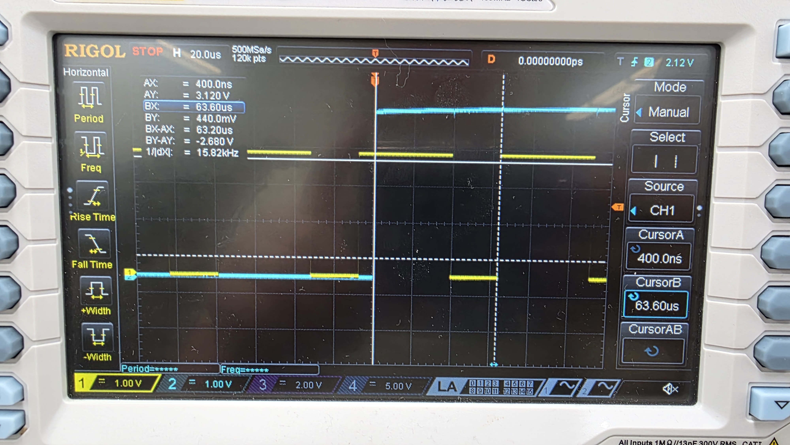
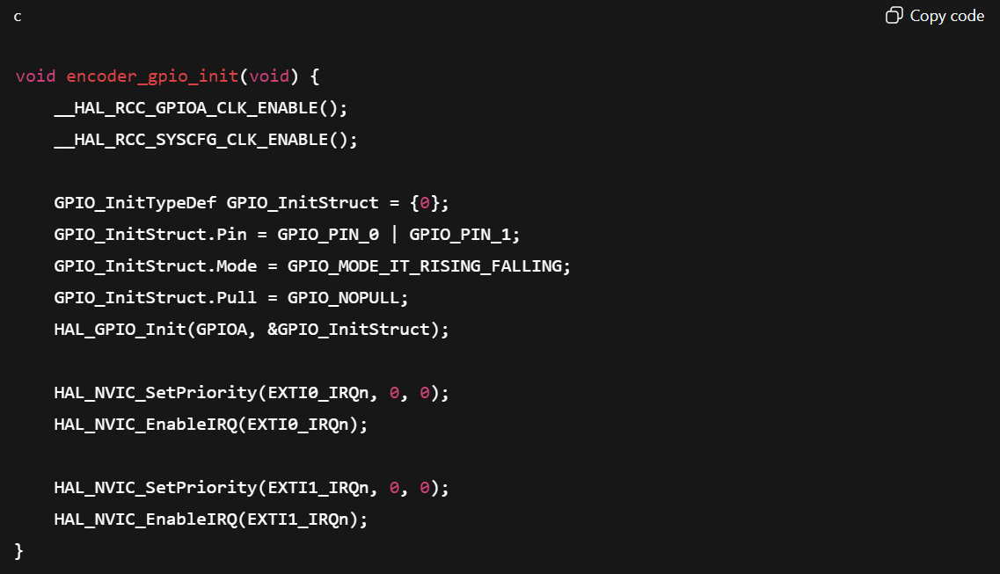
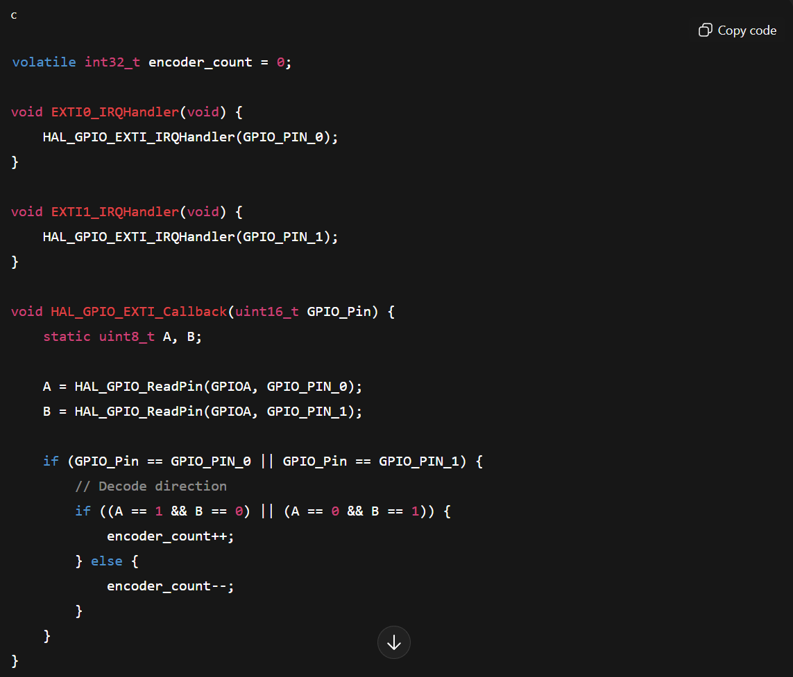

HMC E155 Lab 5: Interrupts
Introduction
In this lab, interrupts and GPIO pins were configured with a counter on the STM32L432KC to read a quadrature encoder on a TS-25GA370H-34 motor. This quadrature encoder reading was used to determine angular velocity of the motor.
Timer Calculations
For the timer, we used a prescaler (clock divider) value of \(clk_{system} / 1000\), meaning each clk on the timer was 1 ms. This means that the range of values for our duration timer is anywhere from 1 to 65535 ms, or .001 to 65.535 s. This enabled us to create a simple 1 Hz telemetry loop that reports velocity and direction of rotation for this lab.
Schematic
The below schematic shows how this circuit was constructed. An external 20V variable power supply was connected to the power and ground pins for our motor we used for testing our system. The 5V, GND, quadrature A, and quadrature B pins were connected to their corresponding MCU pins directly. All pins were enabled with pull-up resistors.
 Figure 1: Electrical schematic for system
Interrupt Diagram
The below diagram shows the control loop present in this system. A main loop ran a 1 Hz cycle that printed velocity and reset counter values before repeating, giving us a telemetry status. The two interrupts both incremented a counter that tracked the number of quadrature encoder edges seen in the past second, and they also tracked which interrupt was last checked. If the same interrupt triggered 2x in a row, it meant that the motor had changed direction, which we could track globally.
 Figure 2: Interrupt diagram for system
Results and Discussion
Velocity Telemetry
When initializing the program, the code appropriately output a 0 for velocity. Upon activating, it correctly determined our control velocity for the motor (2.4 rev/sec at 10 V), and was also able to detect changes in direction when reversing the current path through the motor.
Polling v.s. Interrupts
We were able to test the speed of entering an interrupt v.s. reading a toggled pin with polling by writing code to simulate both situations. First set the start of our interrupt function to toggle a pin on, then read the time between an interrupt being raised and the pin being toggled. As seen below, the time from the onset of an interrupt signal to the first line of the function that toggled the pin took 26.4 \(\mu s\). By comparison, having a polling loop that toggled a pin then read an input took 63.6 \(\mu s\). This indicates that interrupts will be more efficient when polling at the rate that we will be at.
 Figure 3: Oscilloscope trace showing interrupt response time
 Figure 4: Oscilloscope trace showing polling response time
Conclusion
In this lab, I created an interrupt based velocity measurement system using the quadrature encoders present on a 25GA-370 motor. The motor correctly determined direction changes and velocity magnitude. Overall, this lab took me 9 hours.
AI Prototype
Following the directions for the AI Prototype for lab 5, the following prompt was passed into ChatGPT:
Write me interrupt handlers to interface with a quadrature encoder. I’m using the STM32L432KC, what pins should I connect the encoder to in order to allow it to easily trigger the interrupts?
The AI model did not do very well on this task. The first thing it did was enable interrupts for every edge of the program. However, it missed setting some of the signal select muxes that tell the interrupt handlers where to look for interrupt signals. As a result, this code did not successfully run because it couldn’t recognize interrupts. See the below code from GPT.
 Figure 5: Code for the interrupt enables written by ChatGPT, which is missing key register writes
The interrupt handler itself also has a critical bug, which will incorrectly decrement the counter when \(A == B\). As a result, I do not believe this code would have correctly incremented and tracked speed, outputting something very close to 0 every telemetry frame.
 Figure 6: Code for interrupt handlers written by ChatGPT, which does not correctly increment counter